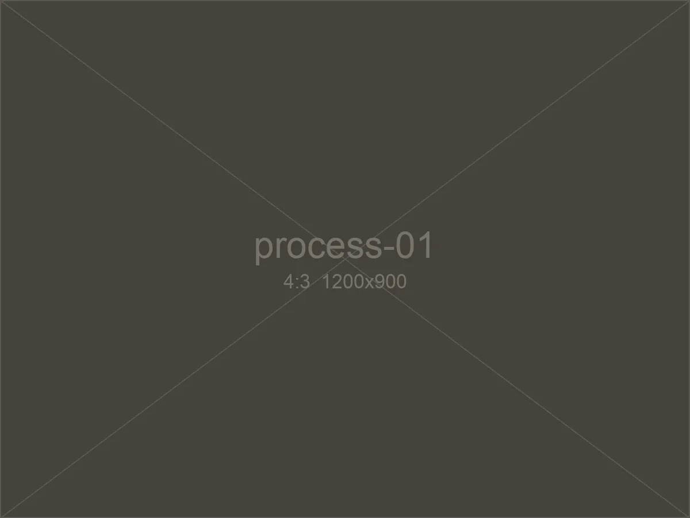
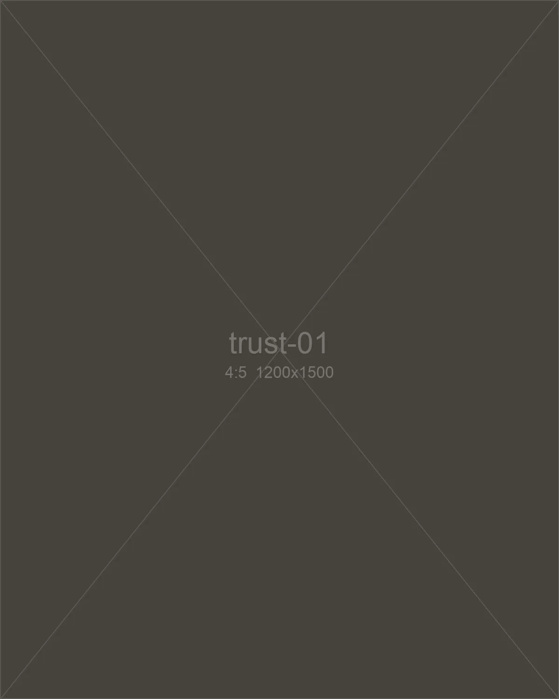
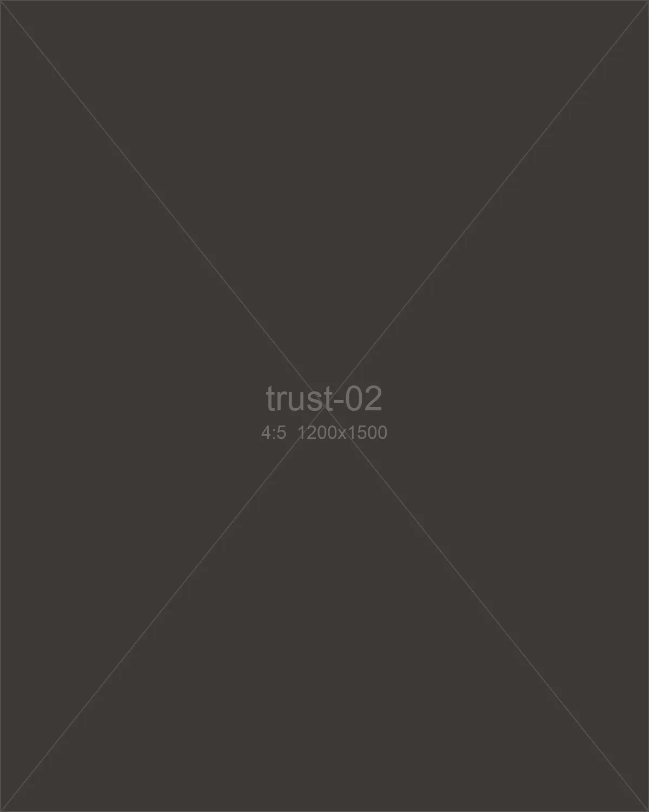
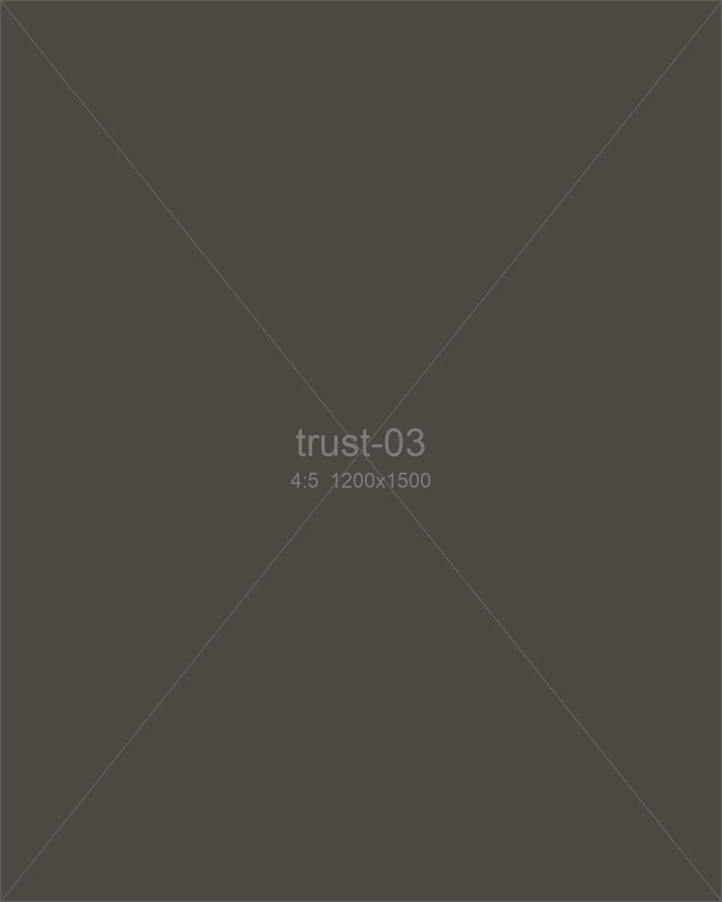
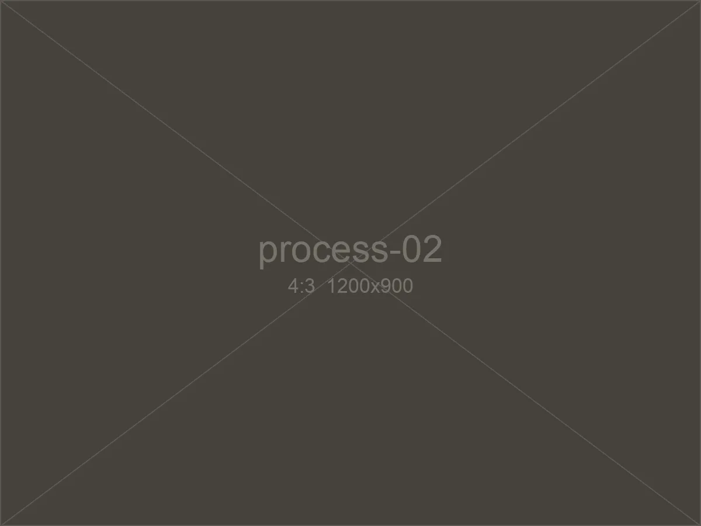
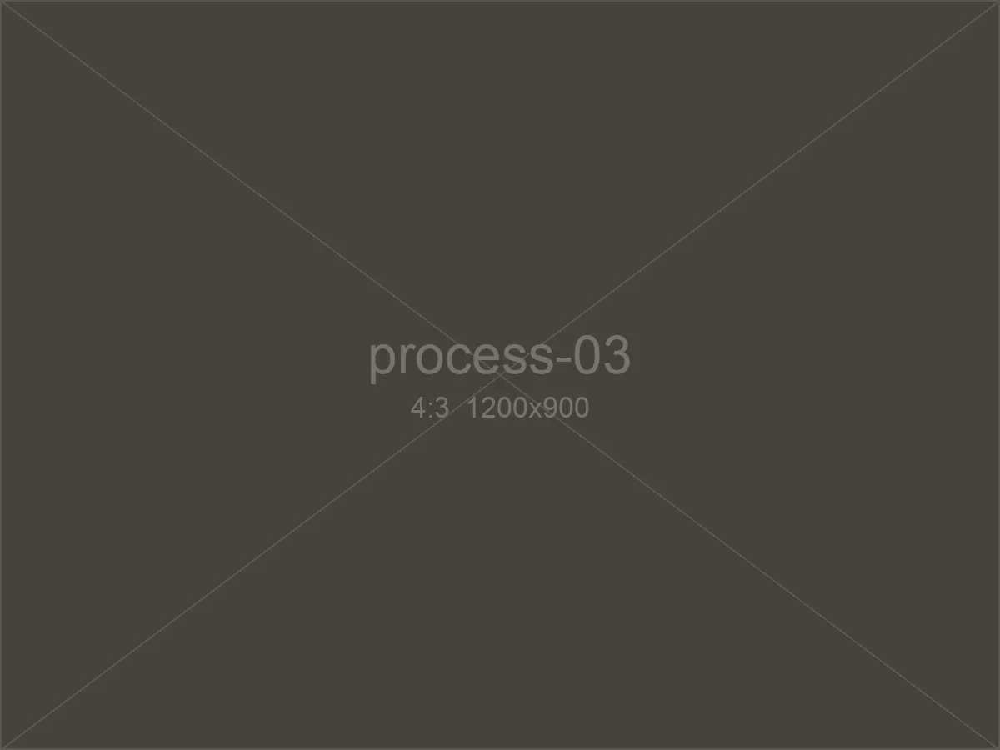
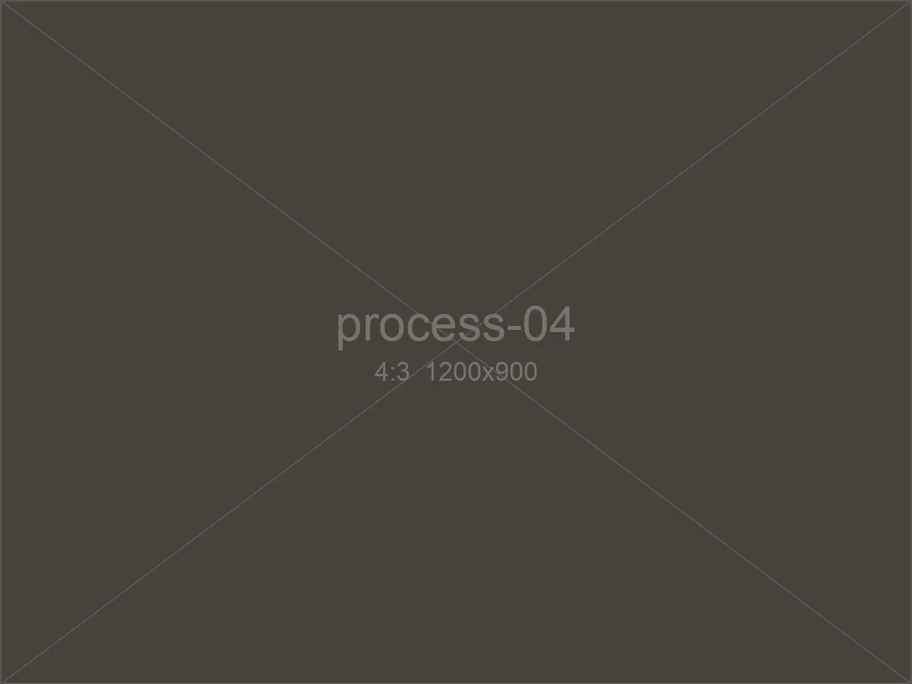
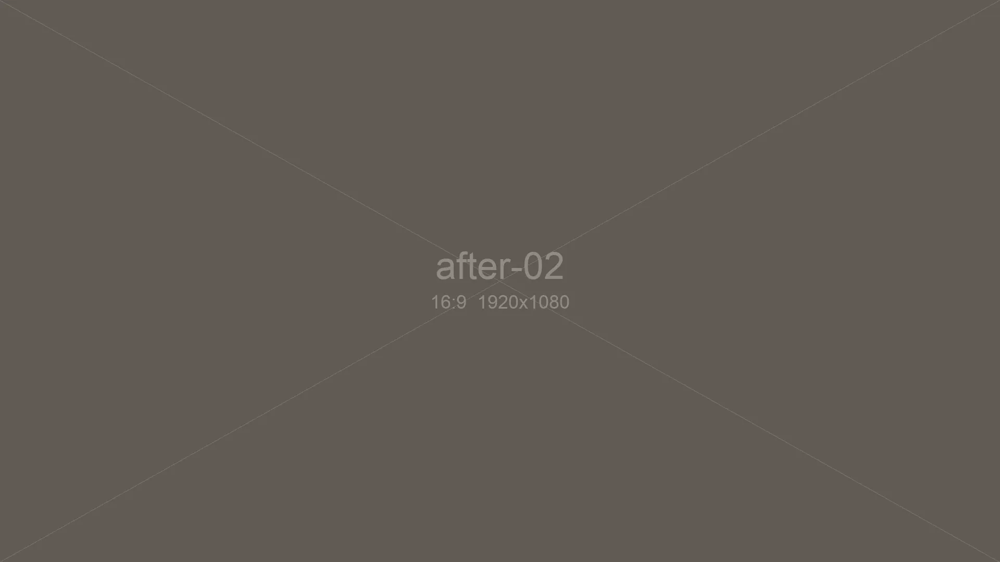
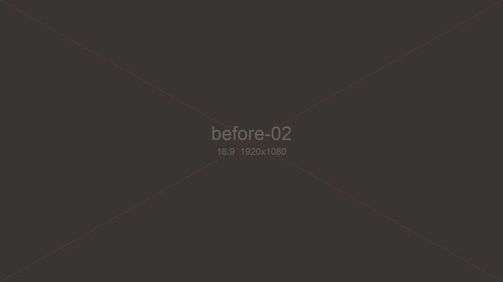

STEP 01 · 약 10분
입고
증상을 듣고 접수해요. 완료 예정 시간을 이 자리에서 바로 알려드려요. 늦어질 것 같으면 저희가 먼저 연락드려요.
걱정 03에 대한 답저희도 라이더라서 잘 알아요. 그래서 걱정부터 꺼내 봤어요.
같은 증상인데, 가게마다 해야 한다는 게 달라요.
찾으러 가면 "다 해 놨어요" 한마디가 전부죠.
바이크가 서면, 출근도 일도 같이 서요.
부르는 게 값인 정비는,
여기서 끝납니다.

자동차는 받지 않아요. 같은 골목에서 이륜차만 봐 온 정비사 두 명이 직접 손대요.

소리만 듣고 부품부터 바꾸지 않아요. 이륜차 전용 진단 장비로 원인을 확인한 뒤에 작업해요.

작업한 부위에 같은 증상이 다시 생기면, 30일 안에는 다시 봐 드려요.
엔진오일, 필터, 점화플러그. 다음 교체 시기까지 알려드려요.
패드 두께와 타이어 홈 깊이를 직접 재서 보여드려요.
늘어난 체인, 닳은 스프라킷. 확인은 눈으로 시켜드려요.
시동 불량, 배터리 방전. 진단기로 원인부터 찾아요.
핸들, 시트, 외관. 시안을 먼저 보여드리고 시작해요.
손세차와 유리막 코팅. 체인 세척도 함께해요.

STEP 01 · 약 10분
증상을 듣고 접수해요. 완료 예정 시간을 이 자리에서 바로 알려드려요. 늦어질 것 같으면 저희가 먼저 연락드려요.
걱정 03에 대한 답
STEP 02 · 약 30분
점검 결과를 사진과 함께 문자로 보내드려요. "지금 꼭 해야 할 것"과 "다음에 해도 되는 것"을 나눠서요.
걱정 01에 대한 답
STEP 03 · 작업 범위에 따라
동의하신 작업만 해요. 작업 중에 새로 보이는 게 있으면, 손을 멈추고 다시 여쭤봐요.
걱정 01에 대한 답
STEP 04 · 약 10분
바꾼 부품은 실물로 보여드리고, 오늘 한 일을 한 장으로 정리해 드려요. 다음 점검 시기도 함께 적어 드려요.
걱정 02에 대한 답소모품 교체는 대부분, 그날 타고 나가세요.
CASE 01
출퇴근용 125cc, 주행 2만 km. "덜컥거리는 소리"로 들어온 바이크예요.


CASE 02
야외 주차 3년 차 바이크. 햇빛에 바랜 도장을 되살렸어요.
CASE 03
바닷가 투어를 자주 다니던 바이크예요.
한 동네에서 오래 일하면, 숫자가 이렇게 남더라고요.
12년
한자리에서 영업
2014년부터 같은 골목에 있어요.
18,400대
누적 작업
하루 평균 다섯 대 정도예요.
72%
다시 오는 라이더
열 명 중 일곱 명은 다음 점검도 여기서 해요.
86%
당일 출고
소모품 교체는 대부분 그날 타고 나가세요.
브레이크 패드 사진이랑 남은 두께를 숫자로 보내 줘서, 처음으로 정비소 말을 그냥 믿을 수 있었어요.
점심 피크 전에 맡겼는데 오후 장사 전에 찾았어요. 하루 공치는 줄 알았거든요.
"이건 아직 안 바꾸셔도 돼요"라는 말을 정비소에서 처음 들어 봤어요.
작업 기록을 한 장으로 주니까, 다음에 언제 뭘 바꿔야 할지 헷갈리지 않아요.
커스텀 시안을 세 번이나 바꿨는데 싫은 내색 한 번 없었어요.
새벽에 시동이 안 걸려서 전화했더니, 출근 시간 전에 와서 봐 주셨어요.
그럼요. 점검 사진을 보시고 결정하시면 돼요. 안 하셔도 괜찮아요.
전화로 위치를 알려 주세요. 가까운 곳이면 직접 가서 보고, 어려우면 가게로 옮겨 와요.
네. 먼저 부품 상태를 확인하고, 장착해도 괜찮을 때만 작업해요.
출고할 때 문자로 한 장짜리 기록을 보내드려요. 다음 점검 시기도 적혀 있어요.
네, 배터리와 모터 진단도 해요. 기종에 따라 다르니 문의 때 알려 주세요.
소모품 교체는 바로 가능할 때가 많아요. 다만 예약하시면 기다리는 시간이 거의 없어요.
남겨 주시면 영업시간 안에 30분 내로 연락드려요.
접수됐어요.
30분 안에 연락드릴게요. 그 전까지 바이크는 무리하지 마세요.